总览 · 系统思维导图
MINDMAP · 一图总览六大系统，再入正文深读
系统拆解全景图
点击图片查看原尺寸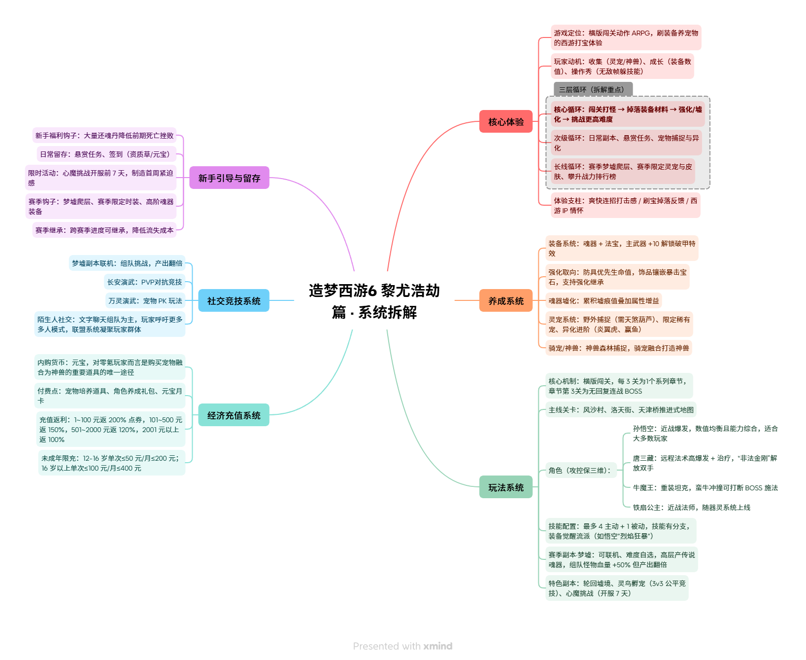
这张导图是本拆解案的总纲——六大分支与正文章节的对应关系如下，可按图索骥：
| 导图分支 | 对应章节 |
|---|---|
| 核心体验（定位 / 三层循环） | 1 产品概览 · 2 核心玩法循环 |
| 玩法系统（关卡 / 角色 / 技能 / 赛季制） | 3 战斗系统 · 4 关卡设计 |
| 养成系统（装备 / 魂器 / 灵宠 / 骑宠神兽） | 5 养成矩阵 · 6 数值模型 |
| 社交竞技系统（梦墟副本 / 长安演武 / 万灵演武） | 7 社交与多人玩法 |
| 经济充值系统（内购币 / 付费点 / 充值返利） | 8 经济与商业化 |
| 新手引导与留存（新手钩子 / 日常 / 赛季继承） | 2 核心玩法循环 · 9 运营与留存 |
产品概览
PRODUCT OVERVIEW · 系列第六作的基本盘
1.1 产品定位与系列沿革
信源：官网 / 平台页《造梦西游6：黎尤浩劫篇》是 4399 造梦工作室的系列第六作，2026 年上半年上线，当前版本 1.0.9a（截图版本号）。系列脉络清晰：页游时代的造梦西游 1~5 部曲 → 手游《造梦西游OL》→ 双端作品《造梦无双》→ 如今的《造梦6》。官方定位一句话：2D 横版国风动作（ARPG）+ 多线养成手游，主打"敦煌异境"新题材。
拿它和系列前作放在一起看，笔者认为《造梦6》不能算《造梦无双》的换皮，更像是把页游的老底子认认真真重做了一遍手游：木质拟物 UI、书法字体、朱印标签这些视觉资产原样继承，OL 时代那条朴素的装备/宠物线，则被扩成了九线并行的养成矩阵（第五章细说）。
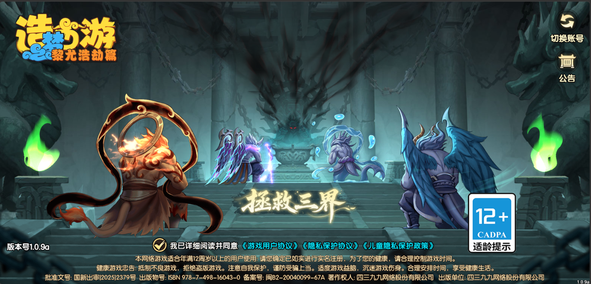
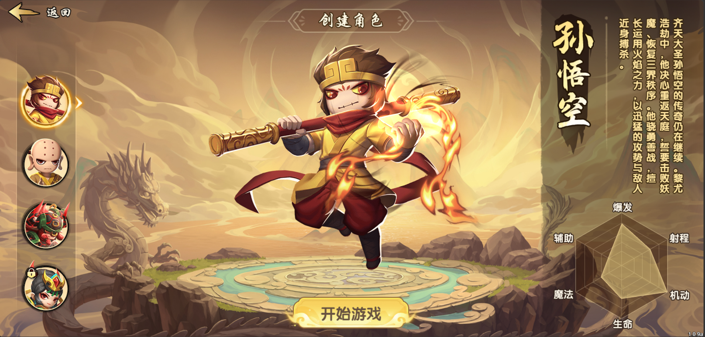
1.2 角色与目标用户
信源：实机 / 攻略站- 初始三角色：孙悟空（高爆发近战，位移灵活）、唐三藏（远程法系，站桩稳定）、牛魔王（防御坦克）——牛魔王需 6 元解锁，或通过"魔焰滔天"赛季免费获取。单账号最多创建 5 名角色。
- 目标用户画像【判断】：① 造梦 IP 页游世代的情怀用户（90/00 后）；② 横版动作爱好者；③ 西游题材泛用户。三人组的经典配置明显在照顾低龄与下沉市场——新手推荐唐三藏（容错率高），说明官方预期大量"操作不精"的用户。
- 商业模式：F2P + 内购（元宝/点券/礼包/月卡/战令/抽卡）。战斗截图均为键鼠键位布局（UIOLH 技能 + 空格 无双，客户端水印 1.0.9a），PC 端与移动端均可游玩【推测，依据实机键位】。
- 市场口碑现状：TapTap 约 12 万关注，小米平台评分 2.7 / 5（18 人评价）；社区高频负面词是"骗氪""爆率低"。这组数据后面商业化章节展开。
核心玩法循环
CORE LOOP · 闯关—掉落—养成—变强的飞轮
2.1 宏观循环：一条飞轮九条养成
综合推断获取首掉落
魂币 / 器灵
消耗资源
量化成长
开启下一环
这是最经典的"关卡解锁系统"模型：主线关卡是唯一主轴，九条养成线全部挂在关卡进度上解锁。官方还把它做成了聚合面板——"我要变强"指引（图10，见第六章），9 条变强路径一次性摆给你看。笔者认为这套设计的实质，是用系统解锁节奏去顶替内容消耗速度：前 12 关平均每两三关就有一个新钩子，前三小时的获得感拉得极满。
2.2 单局流程：从选关到结算
信源：实机截图串联- 选关：世界地图分区页签（人间 / 地府 / 梦墟）→ 关卡信息简介（图04：关卡背景、推荐战斗力 105600、推荐等级 57、产出奖励、"通关后修心效率提升至480心得/小时"，右侧附 Boss 战力预览与出战宠物选择）。
- 进图：横版走图刷怪，地形带竖向分层与隐藏分支（图06/07，详见第四章）。
- Boss 战：关卡内剧情交互（图08：NPC 对话推进"残魂"主线）→ Boss 战（护盾/连击机制，图13）→ 高潮定格演出（图14：巨幅书法"破"字）。
- 结算：胜利结算（图11：无星级评定，展示副本耗时 08:40 与获得奖励，提供"再次挑战(J) / 返回地图(K)"快捷键）；战败则弹限时抉择（图12："复活(F) / 放弃"，复活消耗复活币或元宝）——战败时刻的即时付费钩子。
- 组队变体：双人组队关卡（图15）走同一流程，血条栏并列显示两名玩家。
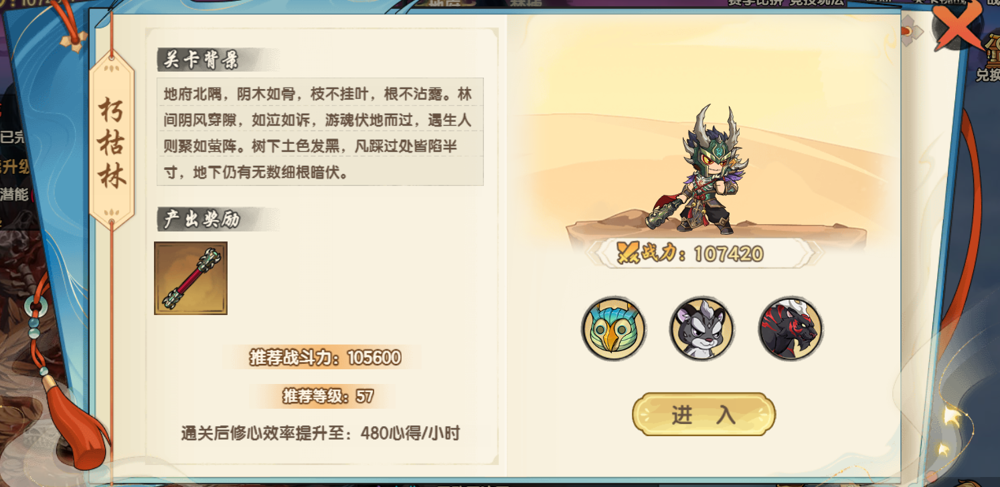
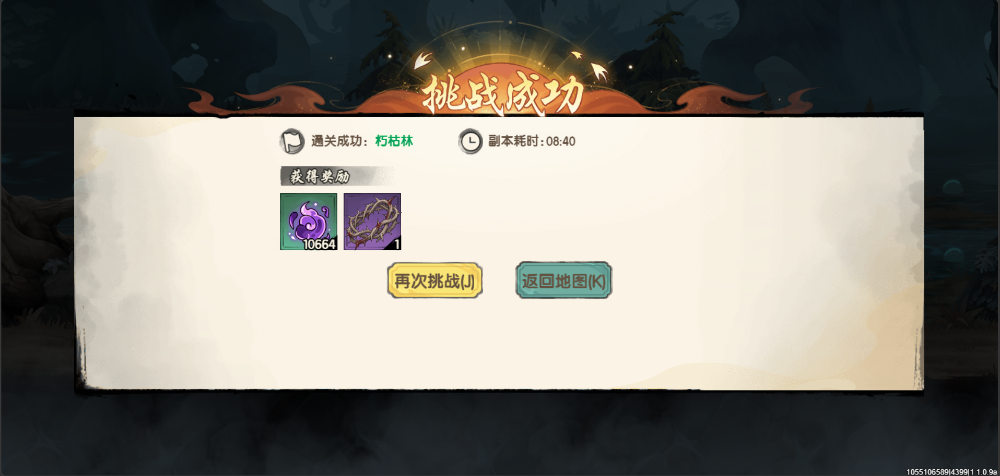
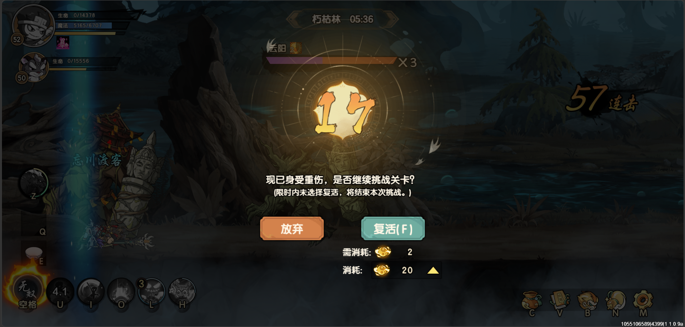
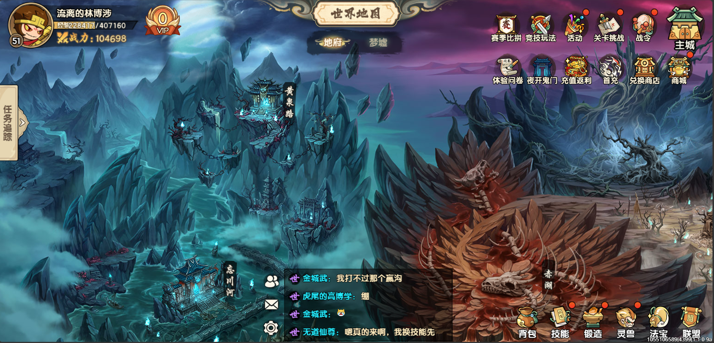
2.3 系统解锁节奏表
信源：新手开荒攻略 + 公告| 主线进度 | 解锁系统 | 设计意图【判断】 |
|---|---|---|
| 第 1 关 | 修心系统（挂机产出"心得"） | 第一晚就埋挂机收益钩子 |
| 第 2 关 | 战令、神兽森林、七日签到/任务、在线奖励 | 留存四件套一次性打开 |
| 第 3 关 | 法宝（闲置装备合成）、悬赏（每日3次） | 装备回收出口 + 日常任务闭环 |
| 第 5 关 | 联盟（战勋商店） | 社交绑定前置 |
| 第 6 关 | 装备强化（+12）、材料本"葛芦之山"（每日2次） | 第一条硬养成线落地 |
| 第 9 关 | 长安演武（异步PVP）、宝石镶嵌 | 战力验证场 + 新养成线 |
| 第 10 关 | 灵鸟孵宠（3v3 夺蛋竞技） | PVP 差异化玩法 |
| 第 12 关 | 梦墟副本 + "魔焰滔天"赛季 + 魂器 | Endgame 内容 + 赛季制启动 |
战斗系统 ★深挖
COMBAT · 连击博弈、护盾拆解与三角色差异
3.1 操作模型与战斗 HUD
信源：实机截图 13/14/15战斗为横版移动 + 跳跃 + 技能连携的经典模型。PC 端键位：空格无双 + UIOLH 五个技能位 + CVBNM 道具位 + Z 宠物/侧栏 + QE 消耗品。五个技能位对应技能树里"已启用"的技能——技能树的构筑结果直接映射到战斗操作层，这是养成与战斗的接口。
HUD 信息架构：左上双玩家血条/蓝条（组队共存）、上中 Boss 名+护盾条（蓝色值 + 分段标记，图13 中为 ×5）、右上连击计数（书法字"27连击"/"130连击"）、伤害数字浮动。我特别注意到右上角连击数用了书法体+金色——"打得多炫"直接变成了看得见的奖励，横版动作里很划算的一笔。
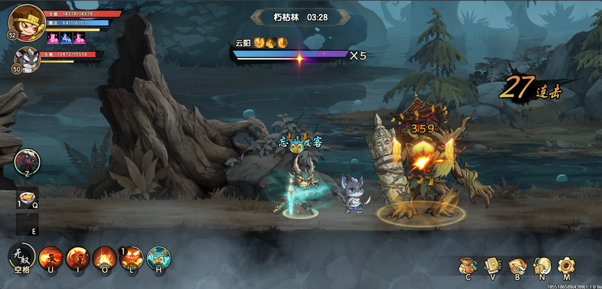
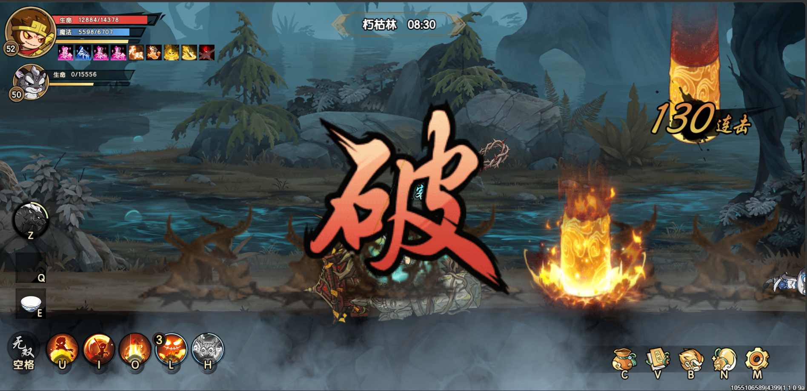
3.2 连击保护护盾：防压制的博弈开关
核心机制拆解图13 里最值得学的设计：Boss 的"连击保护护盾"。玩家连击数攀升后，Boss 周身出现金色护盾环并进入霸体，同时顶部架势条分段显示（图13 为 ×5，图12 战败画面中同一 Boss 云阳为 ×3——段数随 Boss 阶段或人数变化【推测】）——连击打到阈值后 Boss 开盾，打断玩家的无限连。
- 为什么需要它：横版动作的固有问题是"一旦连上就无限连"，Boss 变成木桩。护盾机制把战斗从"执行连招表"变成"连击窗口管理"——开盾前抢输出，开盾后走位拆盾/等架势条回落，战斗节奏被强制起伏。
- 分段架势条的意义：把"盾还剩多久"这个看不见的东西画成段位标记，玩家能预判开盾时机再决定接着打还是先走位。说白了就是把隐藏机制摆到台面上，挫败感自然就降下来了。
- 配套细节：更新公告中出现"修复部分子弹击退参数异常"——击退/浮空等硬直参数与护盾体系联动，说明打击反馈是经过整轮调参的，不是纯数值堆砌。
3.3 技能系统：环形树 + 无双核
信源：实机截图 26技能界面（图26）是全游戏最有辨识度的 UI：八个技能图标环形排布，圆心是"无双"大招，左页签为 技能 / 修心 / 魂器 三大角色面板。
- 环形语义：中心无双=角色核心，八个技能环绕=外围能力。等级上限随进度（截图中 10/11/6/1 级并存），升级条件为角色等级门槛（火魔斩 6→7 级需角色 30 级）+ 升阶材料；升级后技能的战斗内蓝耗同步上调（217→305 魔法）——威力与消耗同涨，技能等级同时也是蓝耗管理决策【判断】。
- 技能设计样例（火魔斩）：冷却 10 秒、消耗 217 魔法，标注"充能技"——空中释放获得短暂无敌帧，落地最后一斩范围扩大。无敌帧 + 空中择，说明动作层有真实的博弈深度。
- 被动与分身："斗战胜佛"为被动技，"多重分身"为召唤系——技能类型覆盖主动/充能/被动/召唤，构筑自由度接近页游时代造梦的老配方。
- 减负四件套：底部"启用本页 / 技能装配 / 重置技能 / 一键升级"——多页技能页切换（PVE/PVP 各一套配置），一键升级消化技能点。这种减负意识在后面的章节里还会反复看到。
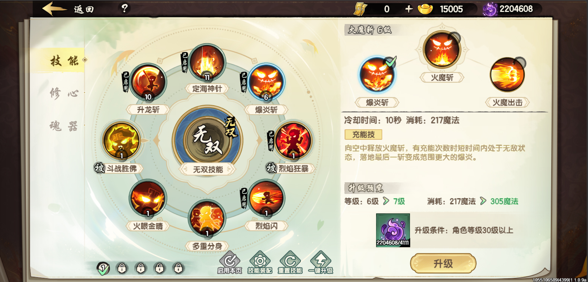
3.4 三角色定位与雷达图
六维数值为【推测】，轴名来自选角界面选角界面的雷达图（图02 右侧）用六边形给出三人定位差异，是我非常喜欢的信息前置：在玩家还不了解系统时，先用一张图回答"这三个角色有什么区别"。三人共享关卡与养成资源，差异只在战斗手感——角色是"皮肤化的玩法模块"，而不是像传统 MMO 的职业壁垒。另外皮肤/衣柜、登录效果等外观线持续更新（8/7 公告），角色外观商业化有空间。
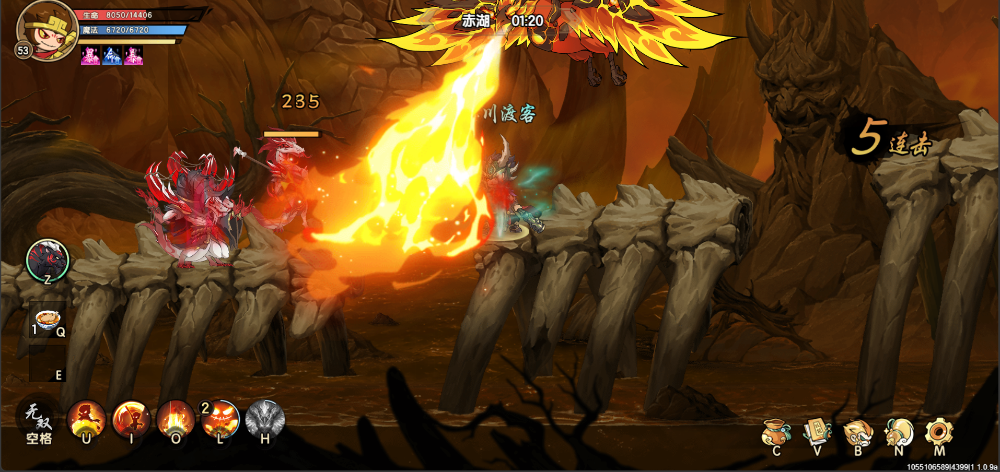
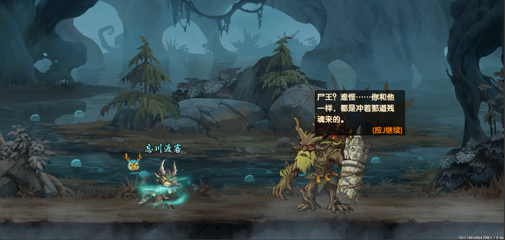
关卡设计 ★深挖
LEVEL DESIGN · 地形分层、隐藏分支与章节主题
4.1 章节结构：从居安镇到地府
信源：公告时间线 + 世界地图世界地图包含「人间 / 地府 / 梦墟」三类区域页签（图05 人间页、图09 地府页、图20 梦墟异变页）。主线脉络按公告时间线还原：新手章居安镇起步，人间页为唐风城镇群（延兴门、大雁塔、圆丘、天津桥等），其后赤湖（8/14 开放，55级）与地府篇（黄泉路 / 忘川河 / 冥海 7/24 → 朽枯林 9/4，60级）交错开放，并非严格线性；「梦墟」页则是魔焰滔天赛季的异变世界（图20：人间全境被魔焰侵蚀）。每章一个视觉主题：人间的水墨城镇、赤湖的丹霞水土、地府的幽绿鬼火——平均每两三周投放一张新地图（详见 9.1 时间线）。
- 异变与副本：梦墟（图20，赛季异变世界页——牛魔梦魇挑战分一重/二重/三重难度）、轮回墟镜（图32）、葛芦之山（材料本）——正线之外用"异空间"主题区隔玩法定位。
- 关卡节奏：界面顶部为副本耗时计时（多张截图记录到 01:45 / 03:28 / 05:36 / 08:30，结算页 08:40），单局普遍在 5~9 分钟量级，偏中重度；剧情交互（图08）作为节奏呼吸口。
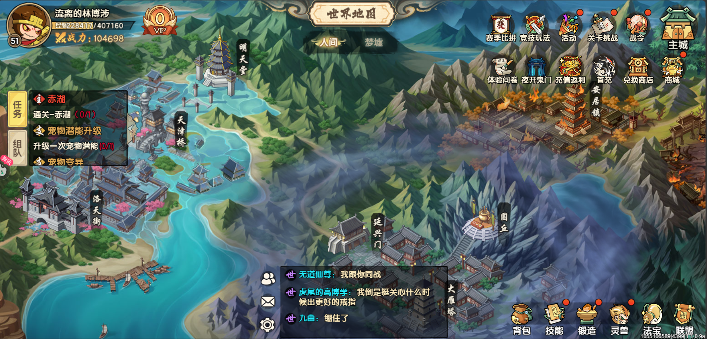
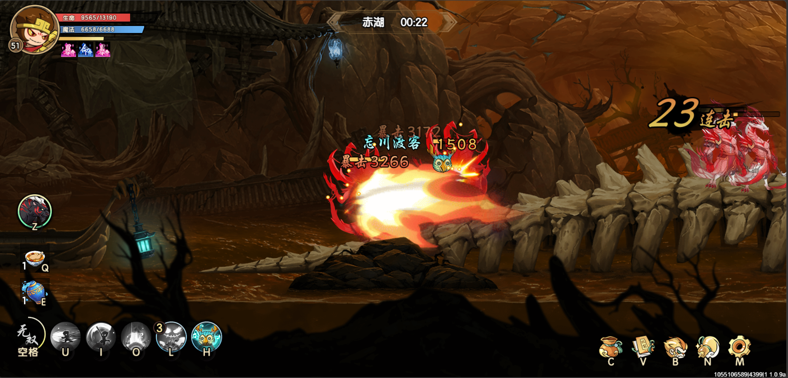
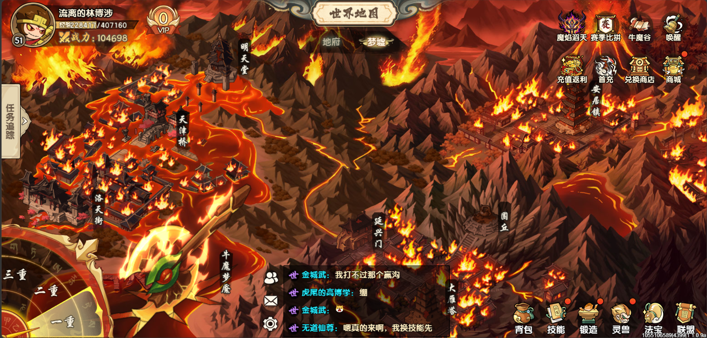
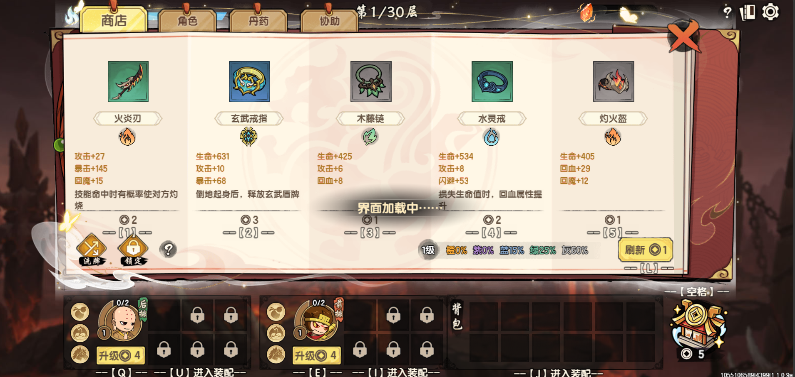
4.2 地形设计：三层纵深的走图体验
信源：实机截图 06/07以朽枯林（图06）为例拆解地形：上层悬崖路径 → 中层悬浮石台（玩家动线）→ 下层木桥平台，三层纵向纵深让"从左走到右"变成了分段探索。几个观察点：
- 跳跃间隙就是节奏：中层石台之间的断口是天然的战斗触发器——跳跃落点附近刷怪，走位和跳跃被地形串到一起，走图不单调。
- 层次就是信息：暗色低层+亮色平台拉出明度对比，哪里能站一眼就能看出来，横版游戏常见的"路该怎么走"的歧义被压到了最低。
- 双人协同地形：图15 双人组队关卡中出现了分叉高台——两个玩家可以分层站位夹击，组队关卡的地形比单人图更立体【判断】。
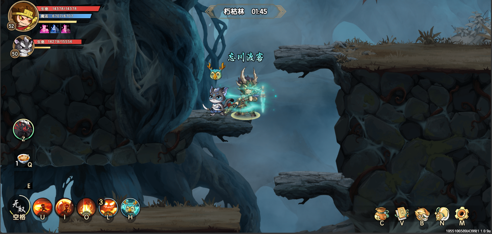
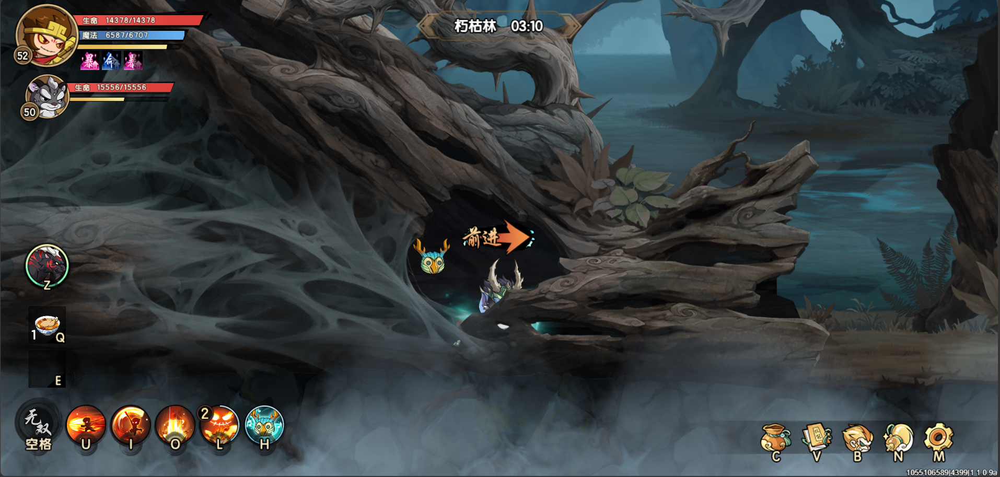
4.3 隐藏内容：探索层的奖励设计
信源：实机截图 33/34关卡里埋了两类隐藏点（两张截图均取自双人关卡"丰都"）：隐藏关卡入口（图34：金色箭头直指一口水井——入口藏在"跳下去"的反直觉位置）和隐藏交互入口（图33：建筑门前浮现 F 键提示的互动点）。潜台词是"每张图都值得再走一遍"，再配上扫荡功能（8/22 给夜开鬼门补了扫荡）——第一次探索自己动手，重复劳动交给扫荡，探索的乐趣和刷材料的枯燥各归各位。
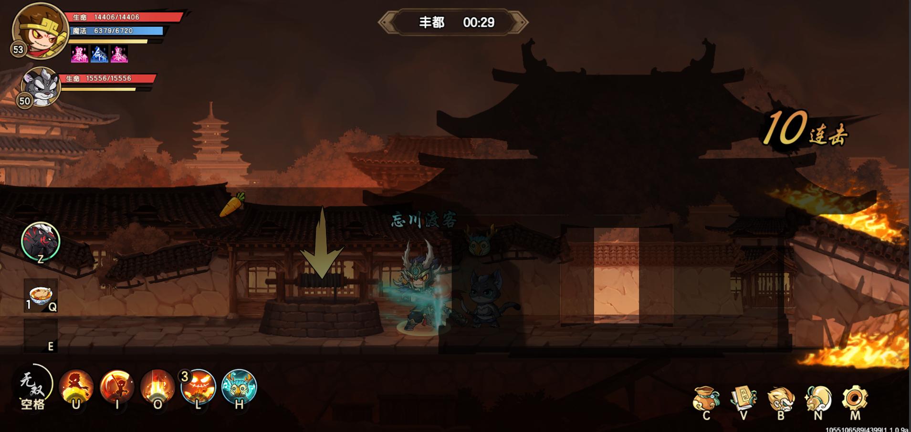
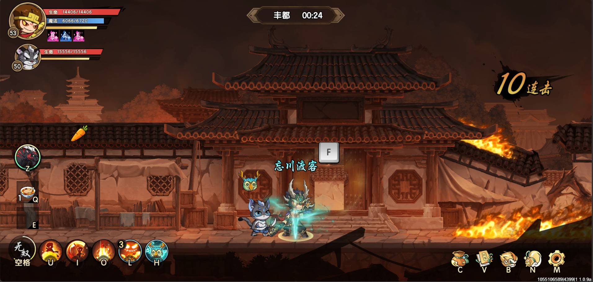
养成矩阵 ★深挖
PROGRESSION · 九线并行的广度养成模型
5.1 九线总览：一条主线，九条支流
"我要变强"面板九宫格即养成地图| 养成线 | 核心内容 | 资源闭环 | 深挖要点 |
|---|---|---|---|
| 装备 | 部位套装（青傀/咒骨/神工），强化+12，墟化1~8层 | 关卡掉落 → 强化石/墟化材料 | 强化与墟化双轨（图17） |
| 宝石 | 6槽：防御/生命/回血/闪避/韧性/守护 | 三角宝石合成升级 | 一键装卸减负（图17） |
| 修心 | 六维属性挂机成长 | 挂机产"心得"，每日免费顿悟=4小时收益 | 离线收益钩子 |
| 技能 | 环形技能树升级（3.3节） | 角色等级门槛+升阶材料；蓝耗随级上调 | 构筑映射操作 |
| 法宝 | 闲置装备合成法宝，器灵觉醒 | 装备回收 → 法宝 → 觉醒技能 | 与器灵强耦合 |
| 器灵 | 抽卡+升星+灵印镶嵌 | 唤灵卷轴 → 残魂分解 → 灵韵精华兑换 | 全游戏最复杂闭环（5.3节） |
| 魂器 | 梦墟掉落，装配激活专属技能，墟化 | 魂币 / 墟烬（梦魇每日3次） | Endgame 深度线（图18） |
| 宠物 | 捕捉/潜能/装备+传承/PK | 神兽森林派遣产出 | 装备传承回收旧资源 |
| 坐骑 | 捕捉、召唤参战、装备 | 与宠物共用潜能体系 | 捕捉玩法情感化 |
这张表的横向对比能看出清晰的设计权重：装备-宝石-器灵-魂器四条线是"数值主力"（都有独立面板入口），宠物-坐骑-风物是"情感层"，修心-技能是"保底线"。官方"我要变强"九宫格（图10：获得装备/修心/技能升级/法宝培养/宠物培养/坐骑培养/装备强化/宝石镶嵌/魂器获得）与上表大体对应——差异在于官方将"获得装备/装备强化"分列、未单列器灵线，本文按资源闭环合并装备线并补入器灵。玩家看到的引导顺序，基本就是设计者心里的养成权重。
5.2 装备双轨制：强化 × 墟化
信源：实机截图 17装备面板（图17）左侧列表暴露了完整信息：每件装备有两个成长轴——"X层"（墟化层数，如"3层"）和"+N"（强化等级，如"+6"，上限+12）。页签为 强化 / 镶嵌 / 合成 / 墟化 四项。
- 宝石系统：装备中心环绕 6 个镶嵌槽，属性覆盖 防御/生命/回血/闪避/韧性/守护——注意"守护""韧性"是功能属性不是纯数值，说明防御端有机制设计空间。三角宝石可"一键装配/一键卸下/合成"，减负到位。
- 墟化：梦墟玩法的专属强化轴（最高8层），材料"墟烬"来自每日3次的梦魇挑战——Endgame 副本与装备第二成长轴绑定，保证高难副本长线价值。
- 装备合成法宝：闲置装备是法宝的合成材料（3关解锁）——老装备永远有出口，这是对"刷不到货"挫败感的对冲设计。
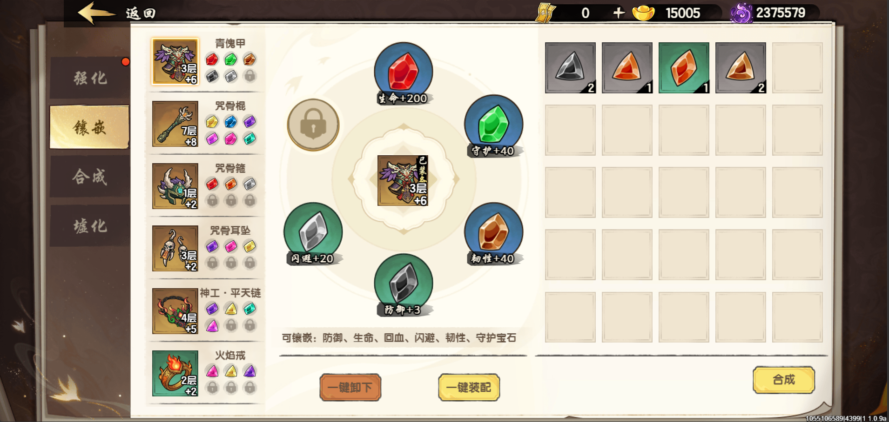
5.3 器灵系统：全游戏最复杂的资源闭环
信源：实机截图 16 + 官方公告（7/31）器灵是 7/31 版本上线的抽卡型养成线，挂在法宝系统下：器灵永久提升角色属性，传说器灵可解锁法宝特殊外观与战斗技能（如法宝"敦风埙"+传说器灵"绯廉"→觉醒技能"灵火飞廉"）。它的完整闭环值得逐环拆：
- 五档品质：传说 / 史诗 / 精良 / 优秀 / 普通，卡池界面直接用紫/金标签标注（图16）。
- 保底结构：每 10 抽必出精良以上；卡池界面实时显示"再唤灵 131 次必出传说"——保底进度条直接写在 Banner 上，付费预期透明化（对比很多游戏藏保底进详情页，这是信任向设计）。
- 升星：消耗 80 个"器灵升星石"升一星，属性递增。
- 灵印：优秀以上品质开灵印槽，灵印可镶嵌+升级+解锁随机副词条——在抽卡之上再叠一层"词条洗练"深度。
- 回收链：重复器灵自动转化为"残魂"（传说40/史诗30/精良20/低阶15）→ 满星后溢出残魂分解为"灵韵精华"→ 兑换唤灵卷轴/灵印/低阶器灵。三层回收下来基本没有死资源，这套卡牌经济做得相当老练。
- 免费投放：每日免费1抽 + 等级礼包（20/30/40/50级共40卷）+ 支线任务35卷 + 兑换商店——免费玩家一个版本周期能攒出一次"小保底"。
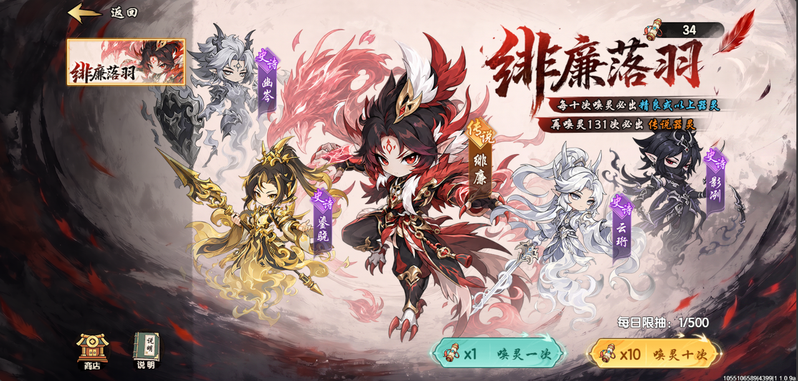
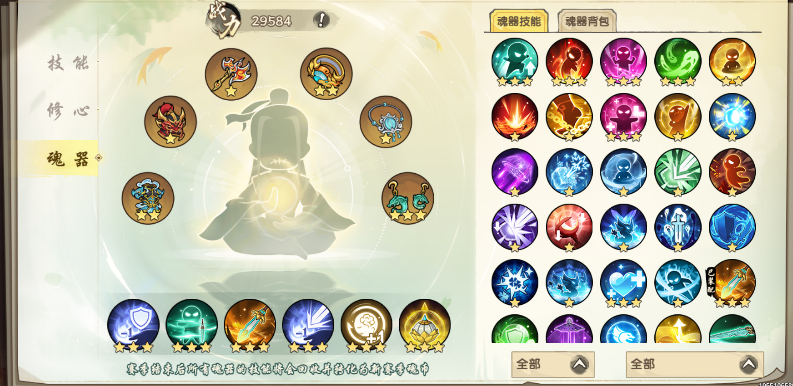
5.4 宠物与坐骑：情感层养成
信源：实机截图 22/23/24/25- 捕捉玩法：坐骑捕捉（图24 捕捉画面→图25 捕捉成功）是主动玩法而非抽卡——战斗中削弱后捕捉，成功的仪式感（金色光环+结算字样）做得足。"亲手抓来的"比"抽到的"情感浓度高，这是页游时代神兽系统的老传承。
- 潜能系统：宠物/坐骑共用潜能书/忘潜书（可重置，防废档）——随机潜能+可重置，赌点但不锁死。
- 宠物装备+传承：9/4 版本上线宠物装备传承——旧装备价值转移到新宠物，与人物装备合成法宝同思路：养成永远给旧资产留出口。
- 战斗协同：宠物跟随出战（图13/14 可见），坐骑关卡中召唤参战；神兽森林每日派遣产出三类材料——宠物同时是战力、情感、产出三条线的交汇点。
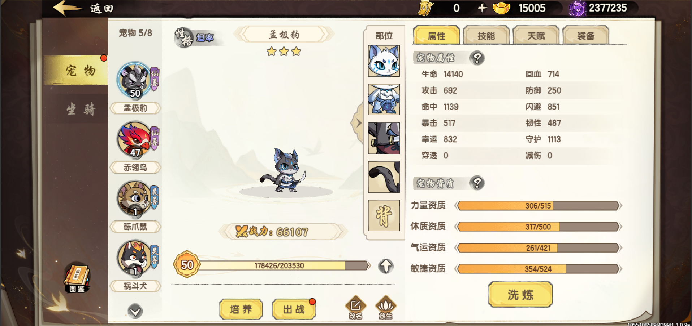
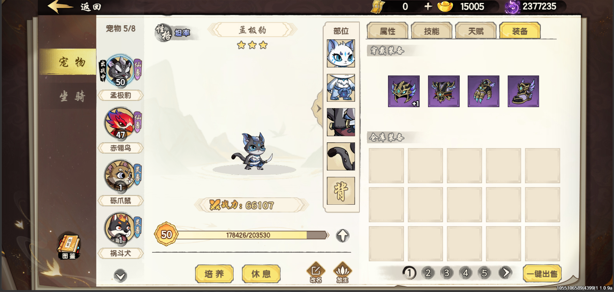
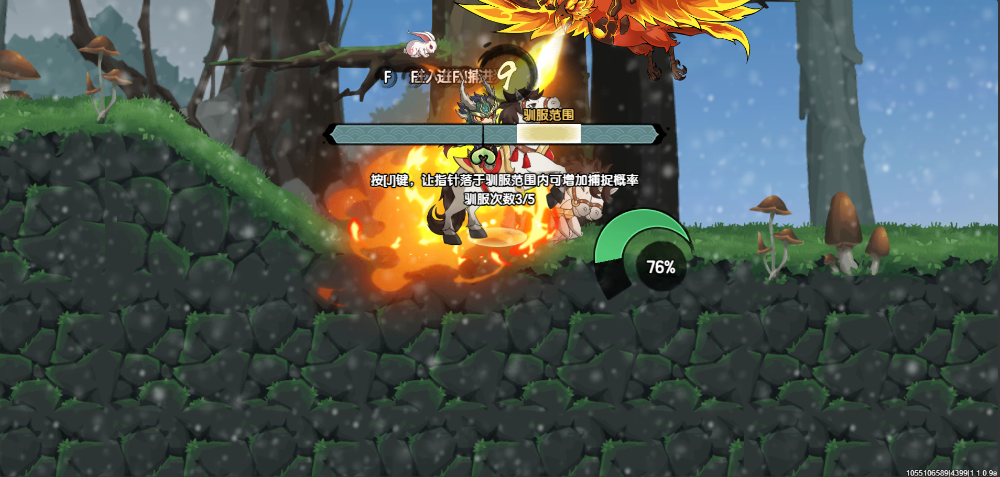
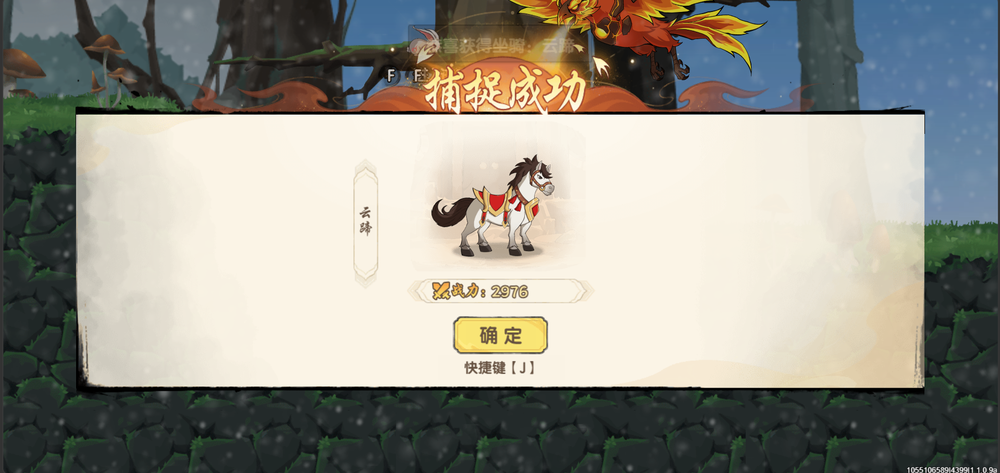
5.5 风物图鉴：收集向的第三空间
信源：实机截图 35/36/37风物（图鉴收集品，如"染瘟枯棘"）有三件套：风物总览 → 系列图鉴 → 获取动画。每章新关卡投放新系列风物（地府章"黄泉篇"的"染瘟枯棘"），收集齐有展示与属性收益。判断：风物线的数值权重很低，真正的价值是给"看风景"的玩家一个理由——美术资源顺手二次利用成长线收集目标，几乎是白捡的长线内容。
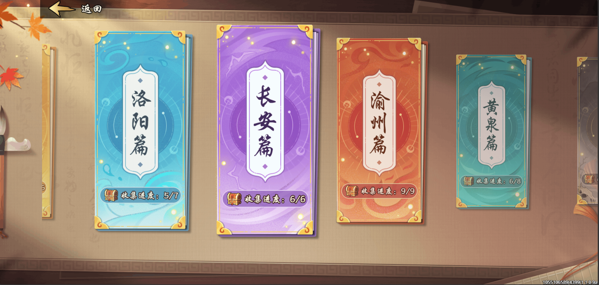
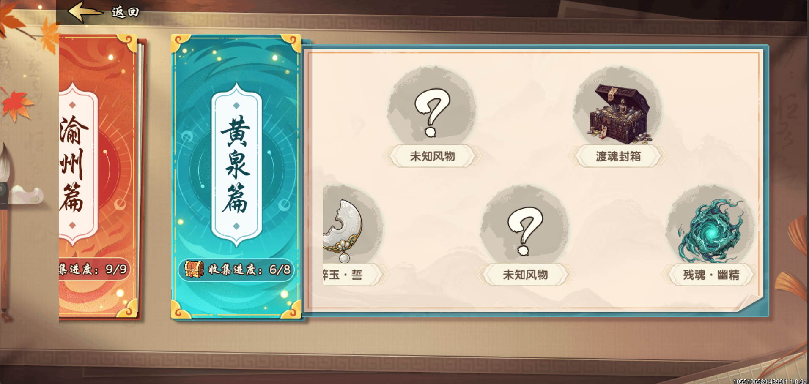
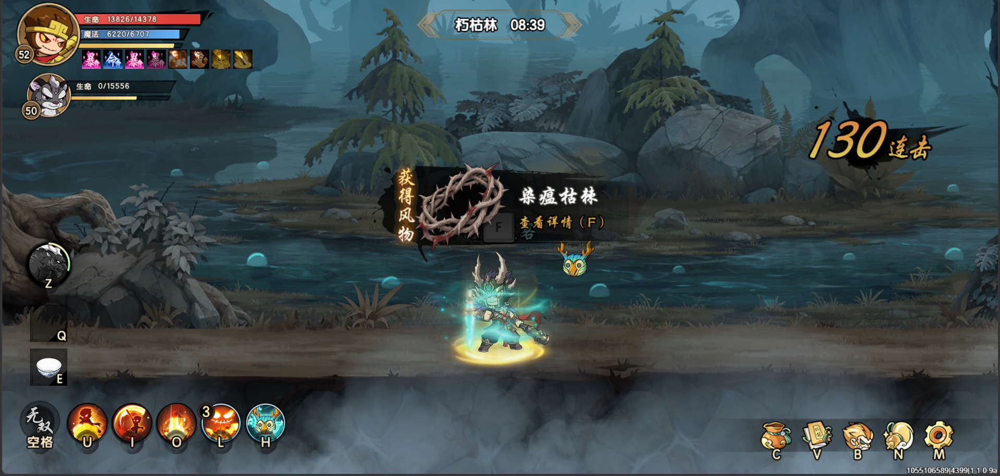
数值模型 ★深挖
NUMERICAL · 战力构成、成长曲线与卡点
6.1 战力构成与变强指引
信源：实机截图 10（54级 · 战力107762）截图样本：54 级角色，战力 107,762，经验 15,849 / 420,070（升55级需约 42 万经验）。战力是全系统加权的单一数值，官方在"我要变强"面板里给出了九条变强路径的官方权重序：获得装备 → 修心 → 技能升级 → 法宝培养 → 宠物培养 → 坐骑培养 → 装备强化 → 宝石镶嵌 → 魂器获得。这个排序即官方认可的性价比序【推测】。
- 聚合入口的价值：卡点的时候玩家缺的不是资源，是"下一步干什么"的确定性。变强指引把九线收进一个面板、每项一键跳转——养成线多本来是认知负担，被它反过来做成了引导优势。
- 聊天栏的场景化运营：变强面板下方直接滚动世界招募信息（"点击空白处关闭/加入"），把组队转化嵌进了最强需求场景。
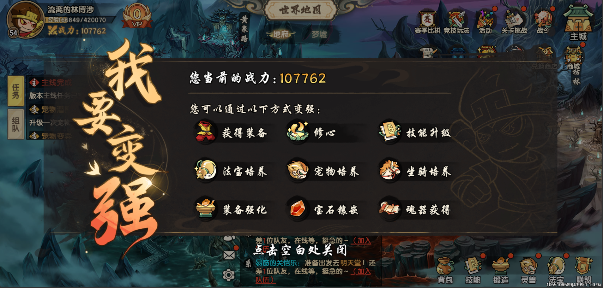
6.2 成长曲线与版本卡点
信源：公告数值 + 【推测】建模| 维度 | 数据点 | 推断的曲线特征 |
|---|---|---|
| 等级上限 | 55级（8/14）→ 60级（9/4），约3周一档 | 版本制锁级：上限=内容进度阀门，防止数值通胀失控 |
| 经验需求 | 54级升55需420,070（截图） | 指数增长；靠挂机心得+体力总量控制日成长【推测】 |
| 装备强化 | +12 上限，强化石产自每日 2 次的材料本 | 线性+材料墙：每日产出封顶，付费买"次数"而非直接数值 |
| 装备墟化 | 1~8层，墟烬每日3次梦魇 | Endgame 轴与每日次数绑定 |
| 器灵保底 | 10抽保底精良 / 131抽必出传说 / 日限500抽 | 双保底+日上限：控制欧非差距，也封顶大R单日爆肝 |
| 修心 | 上限50级（7/24）随版本同步 | 六维属性作为"永远可涨"的兜底成长 |
6.3 卡点—指引—日常的循环闭环
综合拆解把 2~6 章串起来，官方设计的标准循环是：主线卡点 → 变强指引给出9条路径 → 玩家进入日常资源本（悬赏×3 / 葛芦之山×2 / 梦魇×3 / 神兽森林派遣）→ 次日战力提升破卡 → 新关卡新系统。每个资源本都有明确的次数上限和主线挂靠，玩家永远知道"今天的体力该花在哪"。这套闭环的执行质量很高，唯一的风险是九线日常全清的时长——按各本次数与走图时间估算，全清约 60~90 分钟/天【推测】，对休闲用户偏重。
社交与多人玩法
SOCIAL · 轻社交、异步对抗与宠物PK
7.1 组队链路：大厅→房间→共斗
信源：实机截图 27/28/15组队链路三段式：组队大厅（招募信息流）→ 组队界面（房间/申请/好友邀请）→ 双人组队关卡。双人关卡复用单人关卡结构但地形更立体（图15），结算各自独立。聊天系统常驻主界面（图10 底部滚动条），世界频道带一键加入——社交入口全部嵌在场景里，不做独立社交大厅，小团队做网游社交基本都是这么取舍的。
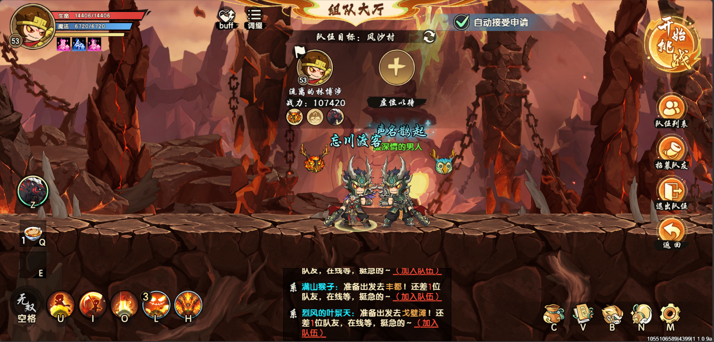
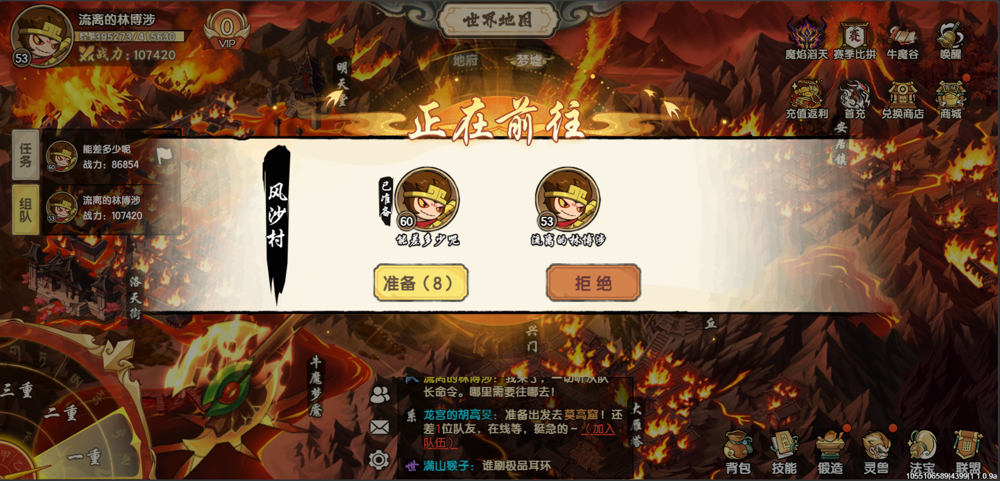
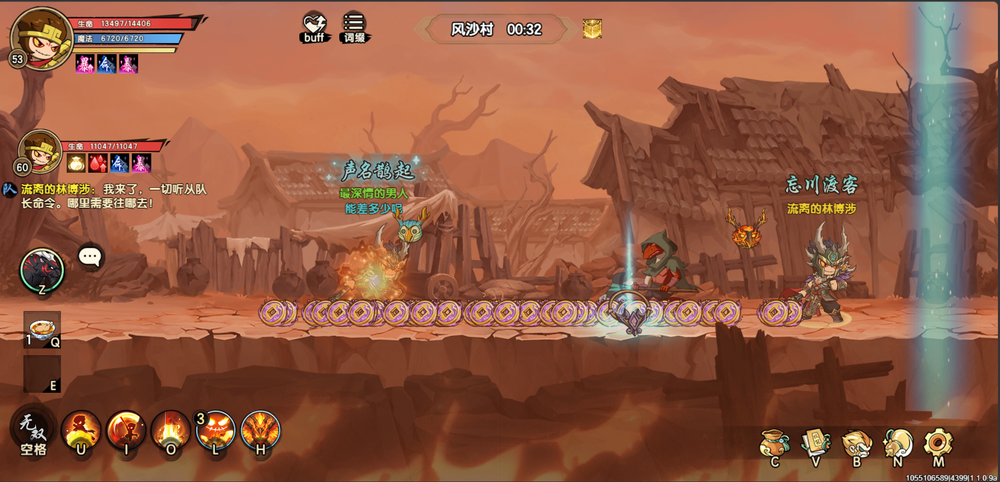
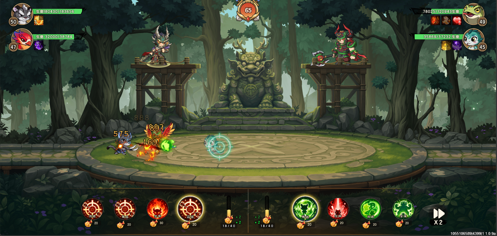
7.2 三层PVP：异步为本，宠物差异化
信源：公告 + 实机- 长安演武（人物异步PVP）：每日 1 次，胜利自选强化词条，每周一段位重置——异步镜像战免实时匹配压力，词条自选给了一次"策略微操"。
- 万灵演武（宠物PK，8/28 新增）：宠物自动对战，双方各带两只宠物分台站位（图03：等级、血量、技能能量条全可见），支持 ×2 倍速，9/4 补充战报回放。把养成深度转化为观赏性对抗——宠物线的价值被 PVP 二次变现，聪明。
- 灵鸟孵宠（3v3 夺蛋竞技）：赛季段位结算 + 灵鸟币兑换，8/7 版本补了"机器人匹配"——匹配池不足时用 AI 兜底，保体验不断档，中小DAU产品的务实做法。
- 轻社交周边：联盟（战勋商店）、NPC 交友（8/7 新增梁祝NPC）、师徒。全都是弱绑定关系，没有强制协作的多人副本超过 2 人。
经济与商业化
MONETIZATION · 货币矩阵、礼包结构与口碑争议
8.1 货币与代币矩阵
信源：实机 + 公告汇总| 货币 | 获取 | 核心去向 |
|---|---|---|
| 元宝 | 活动/维护补偿/礼包 | 通用硬通货（复活、商店、兑换） |
| 点券 | 充值 | 点券商店（等级礼包/直购） |
| 魂币 | 牛魔谷赛季副本 | 梦墟入场凭证（8/14 新增补给功能） |
| 唤灵卷轴 | 每日免费/等级礼包/支线/兑换 | 器灵抽卡 |
| 战勋 / 灵鸟币 / 云游令 | 联盟 / 灵鸟孵宠 / 战令 | 各自专属商店——玩法代币隔离 |
| 灵韵精华 / 残魂 | 器灵分解 | 回收再循环（5.3节） |
观察：主货币只有元宝/点券两条，其余全是玩法绑定的专用代币——每种代币对应一个玩法出口，防止通胀互相污染，这是教科书式的多玩法经济隔离。
8.2 商城结构：小额高频的礼包阵列
信源：实机截图 19商城页签：推荐 / 限时热卖 / 超值礼包 / 元宝月卡 / 互惠商店。限时热卖页的三件套非常典型：
- ¥8 超值礼包（标注"优惠450%"，周限购 5/5）：元宝800+材料——周限购×低价×高折扣标注，锚定"超值"心智的入门位。
- ¥30 超值礼包（优惠355%，周限购 2/2）：中位价格带，元宝3000+稀缺材料。
- ¥6 传说器灵礼包（优惠340%，每日限购 1/1）：直连抽卡线——"每日"限购制造连续登录付费习惯，是三件套里LTV设计最狠的一个。
折扣百分比的呈现方式（450%！）是页游时代的经典锚定话术：以"按元宝面值折算"夸大让利感。叠加战令（多期并行：云游令/宠物手记/夜行录）、累计充值、6元解锁角色，付费点密度相当高。
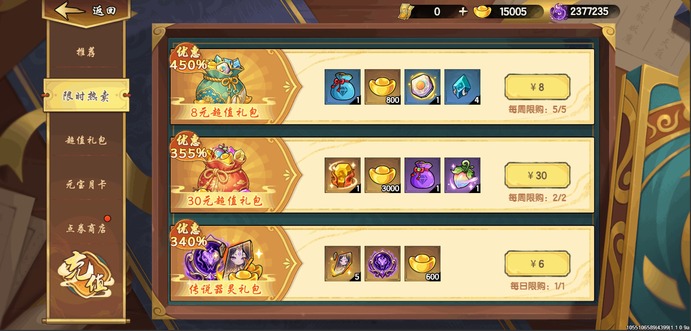
8.3 口碑争议的机制根源
信源：TapTap / 小米社区评论"装备爆率比金魂器爆率高几百倍，你以后有的刷" —— 社区回复（吐槽主线装备掉率）
小米评分 2.7，TapTap 负面集中于三点：付费点密度（每日礼包+周礼包+战令+月卡+新角色）、掉率挫败（主线法宝材料十几把不掉）、角色付费化（第三角色 6 元）。
运营与留存
OPERATION · 周更节奏、赛季制与节日全勤
9.1 周更时间线复盘（7.24 → 9.4）
信源：官方更新公告规律非常清晰：每周五停服更新，"大版本（新系统/新地图）→ 小版本（活动/优化）"交替。7 周内投放了 1 个新付费系统、3 张新地图、2 个新玩法、2 次等级上限上调（55→60）——这个内容产能对小团队来说相当恐怖，大概率是版本预埋充足+活动模板化流水线。
9.2 留存钩子盘点
信源：实机 + 公告- 节日全勤：七夕（佳人相伴）、中元（夜开鬼门）、教师节（文曲下凡）——两周一个主题活动，全部走"限时玩法+限定外观+活动战令"三件套。
- 赛季制："魔焰滔天"赛季（牛魔谷剧情本+梦墟+魂器+赛季签到/任务+唤醒牛魔集齐4道具解锁角色）——Endgame 用赛季内容托底。
- 日常四件套：七日签到阶梯、七日任务（官方话术"每日15分钟"）、在线时长奖励、修心每日免费顿悟——登录→在线→轻养成三层打卡。
- 减负跟进：夜开鬼门扫荡（8/22 热更补上）、万灵演武×2倍速、一键装卸/一键升级——运营侧对"上班感"的反馈响应很快。
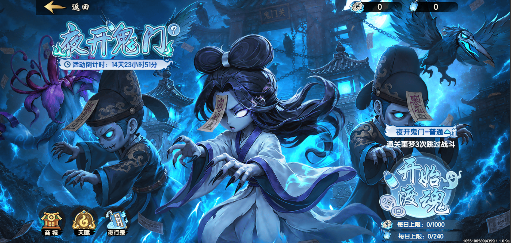
UI / UX 与美术
ART & UX · 拟物木质UI体系与双主题美术
10.1 视觉语言：一套UI，两块色板
综合拆解（本文档视觉系统亦复刻自此）- 双色板叙事：敦煌/人间章节用暖金云纹（选角界面：暖金云海+木棕框架+朱红点缀），地府章节用暗夜蓝绿+幽绿鬼火（登录界面：石殿+鬼火）。UI 骨架不变，换色板即换章节情绪——美术资源复用率极高的主题化方案。
- 拟物木质UI：面板=羊皮纸底+木框+四角铆钉；按钮=鎏金渐变+深木描边；页签=木质竖排/横排；强调=书法字+朱印。在扁平化流行的 2026 年手游里，这套拟物风反而形成了强辨识度的"游戏感"。
- 角色设计：二头身Q版+华丽技能特效；卡池 Banner 用水墨泼墨风（图16 绯廉落羽）——Q版保证亲和力，泼墨拉品质感，两套画法分工明确。
- 打击反馈包装：书法体连击数、金色伤害数字、Boss 护盾环——动作反馈全部"国画化"包装，风格统一。
10.2 UX 减负设计汇总
把九线养成压进可玩清单的手段| 设计 | 位置与效果 |
|---|---|
| 变强指引聚合 | 九线养成一屏导航+一键跳转（图10） |
| 一键化三连 | 宝石一键装卸 / 技能一键升级 / 活动扫荡 |
| 保底透明化 | "再抽131次必出传说"直接写在卡池Banner（图16） |
| 红点+功能预告 | 未解锁系统发福利预埋（器灵上线前送40卷） |
| 嵌入场景的社交 | 聊天栏/组队招募常驻主界面，无独立社交大厅 |
| 安全兜底 | 二级密码（8/7）、潜能忘潜书重置、装备合成出口 |
本拆解案自身也做了一次视觉迭代对照：v1 采用水墨暗色风（图30），v2 即当前版本——直接复刻游戏的木质/羊皮纸/鎏金 UI 语言，让"阅读拆解"的观感贴近"玩游戏"的观感。
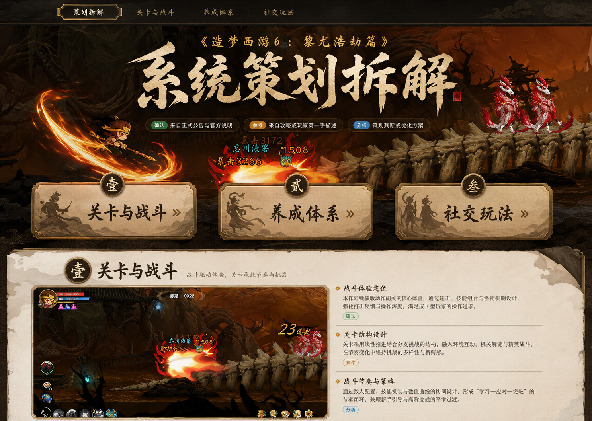
优劣评析
REVIEW · 亮点、短板与归因
11.1 值得学的设计亮点
笔者评判- 连击保护护盾三件套（连击计数→Boss开盾→×5架势可视化）：低成本解决无限连/节奏/深度三题，本作战斗最优设计。
- 器灵资源闭环：抽卡+升星+灵印+三层回收无死资源，卡牌经济成熟度超标。
- 旧资产出口意识：装备合成法宝、宠物装备传承、残魂分解——养成废档挫败被系统性对冲。
- 周更大小版本交替：7周1付费系统+3地图+2玩法的产能节奏，运营执行力强。
- 保底透明化+变强聚合面板：抽卡焦虑和"系统太多不知道先玩哪个"这两个最容易劝退的点，都被正面处理掉了。
11.2 短板与风险
笔者评判 · 含社区佐证- 商业化与用户错配：每日¥6+周礼包+6元角色+多期战令的密度，砸在低付费能力的IP情怀用户上，口碑反噬（小米 2.7 分）。
→ 改进方向：收缩付费点密度、把让利集中做进情怀场景（如回流礼包，设计稿见 12.2），预期评分面修复+口碑传播回暖【推测】。 - 掉率挫败：主线法宝材料低掉率+复活币消耗，刷装体验在社区被集中吐槽；"爆率差几百倍"的体感需要数值侧复核。
→ 改进方向：公示掉率区间+保底次数，预期挫败感帖子占比下降、刷装留存回升【推测，需数据复核】。 - 日常负担重：九线养成全清估算 60~90 分钟/天【推测】，"上班感"是流失隐患。
→ 改进方向：周常化+一键清扫聚合，压缩到 30 分钟档，预期中小 R 日活跃时长结构更健康【推测】。 - 关卡机制单一：走图+Boss两板斧复用度高，机制型关卡缺位，长线内容风险。
→ 改进方向：每季一张"机制图"（机关解谜/防御波次），预期为长线留存提供新鲜感补给【推测】。 - 难度曲线失衡【实测】：自第二张地图开始，逐关难度递进明显失当，第二张地图尤为突出——Boss 数值过高，卡关频次陡增，对玩家体验极不友好。这与 1.2 节"三角色+低门槛动作保底下沉用户"的新手定位直接相悖：前期低门槛建立的手感自信，在第二张地图被 Boss 数值墙硬性击穿，情怀与休闲用户最先流失。
→ 改进方向：本文第 12.1 节给出了逐关数值调整方案，预期卡关频次回落、前期留存曲线修复【推测】。 - 特效可读性：全屏火系特效偶尔遮挡操作视野，动作游戏的可读性红线。
→ 改进方向：敌我弹幕分层透明度+关键判定帧高亮，预期高难本容错率改善【推测】。
如果我是系统策划
DESIGN PROPOSAL · 从拆解到设计的闭环
12.1 难度曲线数值调整方案
设计提案 · 回应 11.2 实测痛点针对 11.2 节实测发现的"第二张地图 Boss 数值墙"，给出一版可直接进评审的调整思路。锚点均来自实机数据：图04 关卡推荐战力 105600 / 推荐等级 57，6.1 节 54 级玩家实际战力 107762，当前等级上限 60（9.1 节）。采用相对系数法而非绝对值——不依赖逐关埋点数据即可评审，落地时再代入真实数值。
| 调整项 | 现状【推测/实测】 | 建议系数 | 设计意图 |
|---|---|---|---|
| 推荐战力梯度 | 第二图部分关卡较前一关跳涨 15%+【体感推测】 | 相邻普通关 ≤1.06x，Boss 关 ≤1.10x | 延续第一张图已验证的平缓手感，曲线贴合 1.2 节下沉定位 |
| Boss HP 系数 | 第二图 Boss 血量相对玩家成长曲线过陡【实测卡关】 | 以第一图为基准 1.0，回调至 0.85~0.92 | 数值墙让位于机制学习，保证卡点时长 ≤3 次尝试 |
| Boss 伤害系数 | 推荐战力达标仍接近两刀死亡【实测体感】 | 按"达标玩家标准配装可承受 4~5 次受击"反推 | 受击容错回归动作游戏常规区间 |
| 护盾触发联动 | 数值与机制同时施压：高伤害+高频开盾【实测】 | 数值墙 Boss 的连击开盾阈值上调 20% | 3.2 节护盾机制保留，但不与数值墙叠加施压 |
12.2 付费点设计稿：「归梦令」情怀回流礼包
设计提案 · 回应 8.2 商业化错配| 设计项 | 方案 |
|---|---|
| 触发时机 | 回归玩家（≥3 日未登录）次日登录；或首次击败第二张地图 Boss 后当日一次性引导——在 11.2 实测的挫败时刻做负情绪转化，而非硬广弹窗 |
| 定价 | ¥6——对齐 8.2 节已验证的每日¥6 习惯付费档，不新增价格锚点 |
| 内容构成 | 复活币×5（回应 11.2 掉率/复活痛点）+ 体力×2 + 限定风物「飞天残影」（5.5 节风物线的收藏向钩子，无数值属性——规避 P2W 指控） |
| 呈现形式 | 羊皮卷轴式弹窗 + 情怀文案（"西行路上，等你归队"），复用 10.1 节双色板视觉语言 |
12.3 提案方法论
框架迁移性说明本章演示了文首总览导图框架的完整迁移路径：拆解结论（11.2）→ 归因（数值墙 vs 定位错配）→ 设计干预（系数表 / 礼包稿）→ 验证方案（A/B 指标）。同一路径可平移至任意横版 ARPG 的系统评审——拆解不是终点，能从拆解推出可落地的设计干预，才算走完策划的闭环。
拆解结语
TAKEAWAYS · 写在拆解完成之后
13.1 拆解结语
笔者观点《造梦西游6》给我的最大启示是：横版 ARPG 这个"老品类"的竞争力公式已经变了——操作手感是入场券，真正的胜负手在养成广度的管理能力（回收、聚合、保底、减负）和内容产能的运营节奏（周更、赛季、节日全勤）。它把页游时代学到的"数值养成+节日运营"两门手艺，装进了现代手游的 LTV 框架，系统完成度是认真的；而口碑困境同样值得记住：当你的用户因情怀而来，任何向付费的挤压都会被放大成"情怀税"。设计能解决效率问题，解决不了和用户的关系问题——这也是笔者认为整个拆解过程中最值得记下来的一句。